특수용접기능사 (2015-10-10 기출문제)
1과목: 용접일반
1. 아크 용접에서 피닝을 하는 목적으로 가장 알맞은 것은?
- 용접부의 잔류응력을 완화시킨다
- 모재의 재질을 검사하는 수단이다
- 응력을 강하게 하고 변형을 유발시킨다
- 모재표면의 이물질을 제거한다
(정답률: 80%)

2. 다음 중 연납의 특성에 관한 설명으로 틀린 것은?
- 연납땜에 사용하는 용가제를 말한다
- 주석-납계 합금이 가장 많이 사용된다
- 기계적 강도가 낮으므로 강도를 필요로 하는 부분에는 적당하지않다
- 은납, 황동납 등이 이에 속하고 물리적 강도가 크게 요구될 때 사용된다.
(정답률: 67%)
3. 다음 각종 용접에서 전격방지 대책으로 틀린 것은
- 홀더나 용접봉은 맨손으로 취급하지 않는다.
- 어두운 곳이나 밀폐된 구조물에서 작업시 보조자와 함께 작업한다.
- CO2 용접이나MIG용접 작업 도중에 와이어를 2명이 교대로 교체할 때는 전원은 차단하지 않아도 된다.
- 용접작업을 하지 않을 때에는 TIG전극봉은 제거하거나 노즐 뒤쪽에 밀어 넣는다
(정답률: 92%)
4. 심(seam)용접법에서 용접 전류의 통전방법이 아닌 것은?
- 직·병렬 통전법
- 단속 통전법
- 연속 통전법
- 맥동 통전법
(정답률: 63%)
5. 플라즈마 아크의 종류가 아닌것은
- 이행형 아크
- 비이행형 아크
- 중간형 아크
- 텐덤형 아크
(정답률: 54%)
6. 피복 아크 용접 결함 중 용착 금속이 냉각 속도가 빠르거나, 모재의 재질이 불량할 때 일어나기 쉬운 결함으로 가장 적당한 것은?
- 용입불량
- 언더컷
- 오버랩
- 선상조직
(정답률: 64%)
7. 용접기의 점검 및 보수시 지켜야 할 사항으로 옳은 것은?
- 정격사용률 이상으로 사용한다
- 탭전환은 반드시 아크 발생을 하면서 시행한다.
- 2차측 단자의 한쪽과 용접기 케이스는 반드시 어스(earth)하지않는다.
- 2차측 케이블이 길어지면 전압강하가 일어나므로 가능한 지름이 큰 케이블을 사용한다.
(정답률: 69%)
8. 용접입열이 일정할 경우에는 열전도율이 큰 것일수록 냉각속도가 빠른데 다음 금속중 열전도율이 가장 높은것은
- 구리
- 납
- 연강
- 스테인리스강
(정답률: 83%)
9. 로봇용접의 분류중 동작 기구로부터의 분류 방식이 아닌 것은?
- PTB 좌표 로봇
- 직각 좌표 로봇
- 극좌표 로봇
- 관절 로봇
(정답률: 56%)
10. CO2 용접작업 중 가스의 유량은 낮은 전류에서 얼마가 적당한가
- 10~15 ℓ/min
- 20~25 ℓ/min
- 30~35 ℓ/min
- 40~45 ℓ/min
(정답률: 75%)
11. 용접부의 균열 중 모재의 재질 결함으로써 강괴일 때 기포가 압연되어 생기는 것으로 설퍼밴드와 같은 층상으로 편재해 있어 강재 내부에 노치를 형성하는 균열은?
- 라미네이션 균열
- 루트 균열
- 응력 제거 풀림 균열
- 크레이터 균열
(정답률: 55%)
12. 다음 중 용접열원을 외부로부터 가하는 것이 아니라 금속분말의 화학반응에 의한 열을 사용하여 용접하는 방식은
- 테르밋 용접
- 전기저항 용접
- 잠호 용접
- 플라즈마 용접
(정답률: 79%)
13. 각종 금속의 용접부 예열온도에 대한 설명으로 틀린 것은?
- 고장력강, 저합금강, 주철의 경우 용접 홈을 50~350℃로 예열한다
- 연강을 0℃ 이하에서 용접할 경우 이음의 양쪽 폭 100mm 정도를 40~75℃로 예열한다
- 열전도가 좋은 구리 합금은 200~400℃의 예열이 필요하다
- 알루미늄 합금은 500~600℃ 정도의 예열온도가 적당하다.
(정답률: 54%)
14. 논 가스 아크 용접의 설명으로 틀린 것은?
- 보호 가스나 용제를 필요로 한다.
- 바람이 있는 옥외에서 작업이 가능하다.
- 용접장치가 간단하며 운반이 편리하다.
- 용접 비드가 아름답고 슬래그 박리성이 좋다.
(정답률: 66%)
15. 용접부의 결함이 오버 랩일 경우 보수 방법은?
- 가는 용접봉을 사용하여 보수한다
- 일부분을 깍아내고 재용접한다.
- 양단에 드릴로 정지 구멍을 뚫고 깎아내고 재용접 한다.
- 그 위에 다시 재용접 한다.
(정답률: 80%)
16. 다음 중 초음파 탐상법의 종류에 해당하지 않는 것은?
- 투과법
- 펄스 반사법
- 관통법
- 공진법
(정답률: 67%)
17. 피복아크 용접 작업의 안전사항 중 전격방지 대책이 아닌 것은?
- 용접기 내부는 수시로 분해·수리하고 청소를하여야 한다.
- 절연 홀더의 절연부분이 노출되거나 파손되면 교체한다.
- 장시간 작업을 하지 않을 시는 반드시 전기 스위치를 차 단한다.
- 젖은 작업복이나 장갑, 신발 등을 착용하지 않는다.
(정답률: 88%)
18. 전자렌즈에 의해 에너지를 집중시킬 수 있고, 고용융 재료의 용접이 가능한 용접법은?
- 레이저용접
- 피복아크 용접
- 전자 빔 용접
- 초음파 용접
(정답률: 71%)
19. 일렉트로 슬래그 용접에서 사용되는 수냉식 판의 재료는?
- 연강
- 동
- 알루미늄
- 주철
(정답률: 52%)
20. 맞대기용접 이음에서 모재의 인장강도는 40kgf/㎜2이며, 용접 시험편의 인장강도가 45kgf/㎜2 일 때 이음효율은 몇 %인가?
- 88.9
- 104.4
- 112.5
- 125.0
(정답률: 58%)
21. 납땜에서 경납용 용제가 아닌 것은?
- 붕사
- 붕산
- 염산
- 알칼리
(정답률: 60%)
22. 서브머지드 아크 용접에서 동일한 전류 전압의 조건에서 사용되는 와이어 지름의 영향 설명 중 옳은 것은?
- 와이어의 지름이 크면 용입이 깊다.
- 와이어의 지름이 작으면 용입이 깊다.
- 와이어의 지름과 상관이 없이 같다.
- 와이어의 지름이 커지면 비드 폭이 좁아진다.
(정답률: 54%)
23. 피복 아크 용접봉에서 피복제의 주된 역할로 틀린 것은?
- 전기 절연 작용을 하고 아크를 안정시킨다.
- 스패터의 발생을 적게 하고 용착금속에 필요한 합금원소를 첨가시킨다.
- 용착 금속의 탈산 정련 작용을 하며 용융점이 높고 높은 점성의 무거운 슬래그를 만든다.
- 모재 표면의 산화물을 제거하고, 양호한 용접부를 만든다.
(정답률: 79%)
24. 다음 중 부하전류가 변하여도 단자 전압을 거의 변화 하지않는 용접기의 특성은?
- 수하 특성
- 하향특성
- 정전압 특성
- 정전류 특성
(정답률: 73%)
25. 아크가 보이지 않는 상태에서 용접이 진행된다고 하여 일명 잠호용접이라 부르기도 하는 용접법은?
- 스터드 용접
- 레이저 용접
- 서브머지드 아크 용접
- 플라즈마 용접
(정답률: 82%)
26. 가스 절단면의 표준 드래그 길이는 판 두께의 몇 %정도가 가장 적당한가
- 10%
- 20%
- 30%
- 40%
(정답률: 81%)
27. 피복아크용접에서 홀더로 잡을 수 있는 용접봉 지름(mm)이 5.0~8.0일 경우사용하는 용접봉 홀더의 종류로 옳은것은
- 125호
- 160호
- 300호
- 400호
(정답률: 57%)
28. 다음 중 용접봉의 내균열성이 가장 좋은 것은?
- 셀룰로오스계
- 티탄계
- 일미나이트계
- 저수소계
(정답률: 74%)
29. 아크 길이가 길 때 일어나는 현상이 아닌 것은?
- 아크가 불안정해진다.
- 용융금속의 산화 및 질화가 쉽다.
- 열 집중력이 양호하다.
- 전압이 높고 스패터가 많다.
(정답률: 82%)
30. 직류용접기 사용 시 역극성(DCRP)과 비교한, 정극성(DCSP)의 일반적인 특징으로 옳은 것은?
- 용접봉의 용융속도가 빠르다.
- 비드 폭이 넓다.
- 모재의 용입이 깊다.
- 박판, 주철, 합금강 비철금속의 접합에 쓰인다.
(정답률: 70%)
31. 가변압식의 팁 번호가 200일 때 10시간 동안 표준 불꽃으로 용접할 경우 아세틸렌 가스의 소비량은 몇 리터 인가?
- 20
- 200
- 2000
- 20000
(정답률: 80%)
32. 정격 2차 전류가 200A, 아크출력 60kW인 교류 용접기를 사용할 때 소비전력은 얼마인가? (단, 내부 손실이 4kW이다.)
- 64kW
- 104kW
- 264kW
- 804kW
(정답률: 54%)
33. 수중절단 작업을 할 때 가장 많이 사용하는 가스로 기포발생이 적은 연료가스는?
- 아르곤
- 수소
- 프로판
- 아세틸렌
(정답률: 83%)
34. 용접기의 규격 AW 500의 설명 중 옳은 것은?
- AW은 직류 아크 용접기라는 뜻이다.
- 500은 정격 2차 전류의 값이다.
- AW은 용접기의 사용률을 말한다.
- 500은 용접기의 무부하 전압 값이다.
(정답률: 74%)
35. 가스용접에서 토치를 오른손에 용접봉을 왼손에 잡고 오른쪽에서 왼쪽으로 용접을 하는 용접법은
- 전진법
- 후진법
- 상진법
- 병진법
(정답률: 72%)
2과목: 용접재료
36. 용접기와 멀리 떨어진 곳에서 용접전류 또는 전압을 조절 할 수 있는 장치는?
- 원격 제어장치
- 핫 스타트 장치
- 고주파 발생 장치
- 수동전류조정장치
(정답률: 87%)
37. 아크에어 가우징법의 작업능률은 가스가우징법 보다 몇 배 정도 높은가?
- 2 ~ 3배
- 4 ~ 5배
- 6 ~ 7배
- 8 ~ 9배
(정답률: 70%)
38. 가스용접에서 프로판가스의 성질 중 틀린 것은?
- 증발 잠열 작고, 연소할 때 필요한 산소의 양은 1:1 정도이다.
- 폭발한계가 좁아 다른 가스에 비해 안전도가 높고 관리가 쉽다
- 액화가 용이하여 용기에 충전이 쉽고 수송이 편리하다.
- 상온에서 기체 상태에고 무색, 투명하며 약간의 냄새가 난다.
(정답률: 61%)
39. 면심입방격자의 어떤 성질이 가공성을 좋게 하는가?
- 취성
- 내식성
- 전연성
- 전기전도성
(정답률: 46%)
40. 알루미늄과 알루미늄 가루를 압축 성형하고 약 500~600℃로 소결하여 압출 가공한 분산 강화형 합금의 기호에 해당하는 것은 ?
- DAP
- ACD
- SAP
- AMP
(정답률: 58%)
41. 스테인리스강 중 내식성이 제일 우수하고 비자성이나 염산, 황산, 염소가승 등에 약하고 결정입계 부식이 발생하기 쉬 운 것은?
- 석출강화계 스테인리스강
- 페라이트계 스테인리스강
- 마텐자이트계 스테인리스강
- 오스테나이트계 스테인리스강
(정답률: 57%)
42. 라우탈은 AI-Cu-Si 합금이다 이중 3~8%Si를 첨가하여 향상되는 성질은?
- 주조성
- 내열성
- 피삭성
- 내식성
(정답률: 47%)
43. 금속의 조직검사로서 측정이 불가능한 것은?
- 결함
- 결정입도
- 내부응력
- 비금속개재물
(정답률: 56%)
44. 탄소 함량 3.4%,규소 함량 2.4% 및 인 함량 0.6%인주철의 탄소당량(CE)은?
- 4.0
- 4.2
- 4.4
- 4.6
(정답률: 44%)
45. 자기변태가 일어나는 점을 자기 변태점이라 하며, 이온도를 무엇이라고 하는가?
- 상점
- 이슬점
- 퀴리점
- 동소점
(정답률: 67%)
46. 다음 중 경질 자성 재료가 아닌 것은?
- 센더스트
- 알니코 자석
- 페라이트 자석
- 네오디뮴 자석
(정답률: 56%)
47. 문쯔메탈(muntz metal)애 대한 설명으로 옳은것은?
- 90%Cu-10%Zn 합금으로 톰백의 대표적인 것이다.
- 70%Cu-30%Zn 합금으로 가공용 황동의 대표적인 것이다.
- 70%Cu-30%Zn 황동에 주석을 1% 함유한 것이다
- 60%Cu-40%Zn 합금으로 황동 중 아연 함유량이 가장높은것이다
(정답률: 56%)
48. 다음의 조직 중 경도 값이 가장 낮은 것은?
- 마텐자이트
- 베이나이트
- 소르바이트
- 오스테나이트
(정답률: 50%)
49. 열처리의 종류 중 항온열처리 방법이 아닌 것은?
- 마퀜칭
- 어닐링
- 마템퍼링
- 오스템퍼링
(정답률: 54%)
50. 컬러 텔레비전의 전자총에서 나온 광선의 영향을 받아새도 마스크가 열팽창 하면 엉뚱한 색이 나오게 된다. 이를 방지하기 위해 새도 마스크 의 제작에 사용되는 불변강은?
- 인바
- Ni--Cr강
- 스테인리스강
- 플래티나이트
(정답률: 57%)
3과목: 기계제도
51. 다음 단면도에 대한 설명으로 틀린 것은?
- 부분 단면도는 일부분을 잘라내고 필요한 내부 모양을 그리기 위한 방법이다
- 조합에 의한 단면도는 축, 휠, 볼트, 너트류의 절단면의 이해를 위해 표시한 것이다.
- 한쪽 단면도는 대칭형 대상물의 외형 절반과 온 단면도의 절단을 조합하여 표시한 것이다.
- 회전도시 단면도는 핸들이나 바퀴 등의 암, 림, 훅, 구조 물 등의 절단면을 90도 회전시켜서 표시한 것이다.
(정답률: 50%)
52. 나사의 감김 방향의 지시 방법중 틀린 것은?
- 오른나사는 일반적으로 감김 방향을 지시하지 않는다.
- 왼나사는 나사의 호칭 바업에 약호 “LH” 를 추가하여 표시한다.
- 동일 부품에 오른나사와 왼나사가 있을 때는 왼나사에만 약호 “LH”를 추가한다.
- 오른나사는 필요하면 나사의 호칭 방법에 약호 “RH”를 추가하여 표시할수 있다.
(정답률: 55%)
53. 그림과 같은 도면의 해독으로 잘못된 것은?
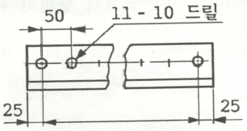
- 구멍사이의 피치는 50 mm
- 구멍의 지름은 10 mm
- 전체 길이는 600 mm
- 구멍의 수는 11개
(정답률: 78%)
54. 그림과 같이 제 3각법 으로 정투상한 도면에 적합한 입체도는?
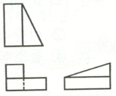
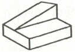
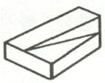
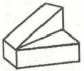
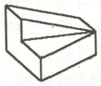
(정답률: 66%)
55. 동일 장소에서 선이 겹칠 경우 나타내야할 선의 우선순위를 옳게 나타낸 것은?
- 외형선 > 중심선 > 숨은선 > 치수보조선
- 외형선 > 치수보조선 > 중심선 > 숨은선
- 외형선 > 숨은선 > 중심선 > 치수보조선
- 외형선 > 중심선 > 치수보조선 > 숨은선
(정답률: 61%)
56. 일반적인 판금 전개도의 전개법이 아닌 것은?
- 다각전개법
- 평행선법
- 방사선법
- 삼각형법
(정답률: 51%)
57. 다음 냉동 장치의 배관 도면에서 팽창 밸브는?
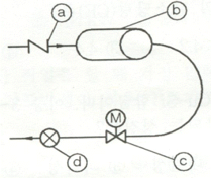
- ⓐ
- ⓑ
- ⓒ
- ⓓ
(정답률: 52%)
58. 다음 중 치수 보조기호로 사용되지 않는 것은?
- π
- sØ
- R
- □
(정답률: 71%)
59. 3각법으로 그린 투상도 중 잘못된 투상이 있는 것은?
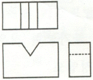
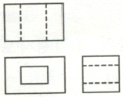
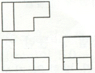
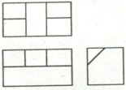
(정답률: 64%)
60. 다음 중 열간 압연 강판 및 강대에 해당하는 재료 기호는?
- SPCC
- SPHC
- STS
- SPB
(정답률: 61%)